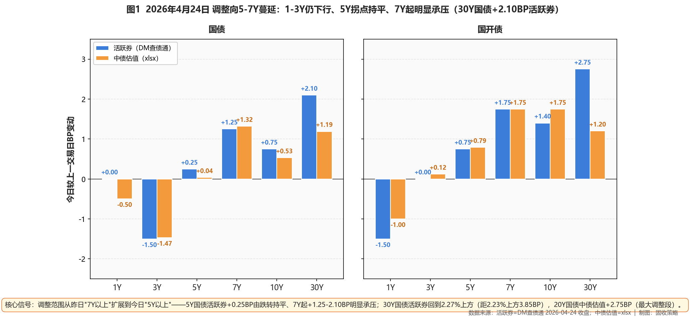
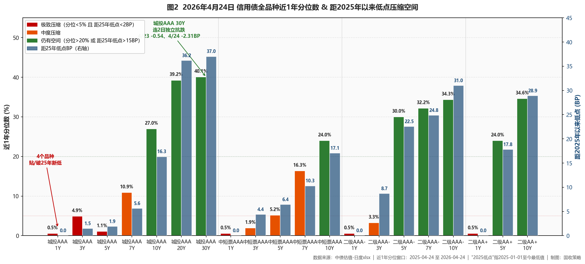

市场定性 震荡市 + 长端调整向中段蔓延 + 城投30Y独立抗跌印证保险盘配置——长端调整范围从昨日"7Y以上"扩展到今日"5Y以上"：1-3Y国债继续下行0.5-1.5BP、5Y拐点持平、7Y起+1.25-2.10BP明显承压；30Y国债活跃券回到2.2685%（距2.23%上方3.85BP）/中债估值2.2472%（距2.23%上方1.72BP）；30Y-10Y国债期限利差走阔至48.71BP；但城投AAA 30Y连续两日逆势下行（4/23 -0.54BP、4/24 -2.31BP）、独立抗跌印证保险/年金配置盘承接。
- ✅ 长端城投（提至15-20%）城投AAA 30Y（连续2日下行、今日-2.31BP、分位40.1%/距低点37.0BP）+ 城投AAA 20Y（-0.85BP、分位39.2%/距低点36.2BP）；保险盘连续承接信号确认；本日30Y-10Y城投利差进一步收窄至32.20BP（较昨日-2.28BP）；核心底仓提至15-20%、利率调整窗口分批加配
- ⚠️ 7Y凸点（暂不新增）中短票AAA 7Y（+0.56BP、分位16.3%）+ 城投AAA 7Y（+0.56BP、分位10.9%）——较二级AAA- 7Y（+1.73BP）抗跌但已转上行；维持5-10%、暂不新增
- ⚠️ 5Y中段（持续承压、暂停加仓）5Y二级AAA-（+1.77BP、分位30.0%）+ 5Y二级AA+（+1.76BP）+ 5Y永续AAA-（+1.40BP）——本周二日累计上行3-4BP、调整尚未到位；维持20-25%、待5Y二级AAA-分位回35%+再加配
- ❌ 规避短端贴底中短票AAA/AA+ 1Y、城投AAA 1Y、二级AAA-/AA+ 1Y、中短票AA+ 1Y——10个品种全部贴/破25年新低；1Y AAA存单1.445%持平——严禁新增、仅到期滚续
- ❌ 长端利率债（继续止盈）10Y国债活跃券1.7525%（距1.75%上方0.25BP）、30Y活跃券2.2685%（距2.23%上方3.85BP）；连续两日确认阻力位；30Y国债分位升至68.4%、距70%+加仓信号还差约5BP收益率上行；继续维持减至底仓下限
- ① 30Y国债跌破2.23% ○ 已反转回阈值上方：活跃券2.2685%（上方3.85BP）、中债估值2.2472%（上方1.72BP）→连续两日确认阻力位，长端利率债继续止盈、不参与超跌反弹
- ② 10Y国债跌破1.75% ○ 已反转回阈值上方：活跃券1.7525%（上方0.25BP）、中债估值1.7601%（上方1.01BP）→1.75%阻力位确认，长端利率债减仓至底仓下限保留
- ③ R-DR007利差走阔至>15BP ○ 未触发：当前4.45BP（较昨日-1.86BP收窄）、距阈值10.55BP→跨周末分层进一步收敛（6.31→4.45），维持110-115%杠杆
- ④ 10Y中短票AAA-3Y利差收窄至≤25BP ○ 未触发：当前45.52BP（较昨日+1.79BP）、距阈值20.52BP→中长-中端价差耗尽，止盈10Y中短票、转配5-7Y二永
- ⑤ 30Y-10Y城投AAA利差收窄至≤15BP ○ 未触发：当前32.20BP（较昨日-2.28BP连续收窄）、距阈值17.20BP→城投30Y独立抗跌→长端城投相对价值显现，暂保留长端城投核心底仓
资金面
央行50亿7天逆回购净投放45亿（利率1.40%）。Wind EDB实测：DR001 1.2188%（+0.17BP）、DR007 1.3257%（+0.19BP）、R001 1.2911%（+0.09BP）、R007 1.3702%（-1.67BP）；DR007继续低于OMO 7.43BP；R-DR007利差进一步收窄至4.45BP（较昨日-1.86BP）——R007单日下行1.67BP是核心驱动，跨月前融资压力明显缓解。X-repo盘面银行隔夜1.2%、非银1.36-1.38%；7天资金可跨月、仍在1.4%以下低位。1Y AAA存单1.445%持平、3M 1.355%持平。下周一公布MLF续做规模。
利率债
调整向5-7Y蔓延、长端1.75%/2.23%阻力位连续两日确认：30Y国债活跃券+2.10BP报2.2685%（距2.23%上方3.85BP）、10Y+0.75BP报1.7525%（距1.75%上方0.25BP）、7Y+1.25BP；中债估值30Y 2.2472%（分位68.4%）、20Y +2.75BP最大调整段、10Y 1.7601%；1-3Y仍下行（1Y国债-0.50BP/2Y-1.57BP/3Y-1.47BP）。30Y-10Y国债期限利差走阔至48.71BP（30Y分位升至68.4%、距70%+加仓信号还差约5BP收益率上行）——下阶段30Y国债至2.27%+触发真实加仓信号。

图1 调整向5-7Y蔓延：1-3Y仍下行、5Y拐点、7-30Y承压（2026-04-24 BP变动）
信用债（核心）
三段分化清晰：🎯 城投AAA 30Y连续2日独立下行（4/23 -0.54BP+今日-2.31BP）、保险盘承接信号已确认；30Y-10Y城投AAA利差进一步收窄至32.20BP（较昨日-2.28BP）。中段调整继续：二级AAA- 7Y +1.73BP/10Y +2.49BP/5Y +1.77BP；二级AA+ 10Y +2.49BP；中短票AAA 7Y/10Y/5Y分别+0.56/+1.50/+0.77BP相对抗跌。短端坚挺（10个品种贴/破25年新低）严禁新增。

图2 信用债全品种近1年分位数 & 距2025年以来低点压缩空间
策略矩阵
一、公开市场与资金面
央行今日开展50亿元7天逆回购（利率1.40%），当日5亿到期、净投放45亿。临近月末资金面继续宽松——Wind EDB实测：DR001 1.2188%（+0.17BP）、DR007 1.3257%（+0.19BP）、R001 1.2911%（+0.09BP）、R007 1.3702%（-1.67BP）；DR007继续低于7天OMO（1.40%）7.43BP，连续多日宽松格局延续。R-DR001利差7.23BP、R-DR007利差4.45BP（较昨日-1.86BP收窄）——R007单日下行1.67BP是核心驱动，跨月前融资压力明显缓解、分层进一步收敛。X-repo盘面银行隔夜1.2%延续充足供给、非银机构质押隔夜1.36-1.38%；7天资金可跨月、仍在1.4%以下低位——临近月末但充足流动性下银行间回购成交量反创历史高点附近。存单方面1Y AAA同业存单1.445%持平、3M AAA 1.355%持平。
一级市场——财政部1Y/20Y/30Y国债加权中标1.06%/2.20%/2.20%，全场倍数2.29/3.73/3.58；财政部债务管理司明确今年超长期特别国债计划1.3万亿，发行节奏与去年基本一致、4月份启动、10月份完成；30Y国债二级中债估值今日报2.2472%、20Y国债+2.75BP（最大调整段）、20Y分位升至51.8%、30Y分位升至68.4%——20-30Y分位本周上行接近合理中枢。下周一公布MLF续做规模——市场预期续作规模与到期量基本匹配、影响相对中性。
二、利率债与债市总览
今日利率债呈现"调整向5-7Y蔓延"的演进结构——昨日的"7Y以上承压"今天扩展到了"5Y以上"。活跃券端：30Y国债"26附息国债02" +2.10BP报2.2685%、10Y国债"26附息国债05" +0.75BP报1.7525%、10Y国开"25国开20" +1.40BP报1.8760%、7Y国债+1.25BP、5Y国债持平+0.25BP；中债估值曲线口径：30Y国债+1.19BP报2.2472%、20Y国债+2.75BP报2.1853%（最大调整段）、10Y国债+0.53BP报1.7601%、7Y+1.32BP；同时1-3Y仍下行：1Y国债-0.50BP/2Y-1.57BP/3Y-1.47BP，国开1Y-1.00BP——曲线呈现"前端坚挺、5Y拐点、7-30Y承压"的明确分化。
关键阻力位连续两日确认：10Y国债活跃券1.7525%（距1.75%上方0.25BP）/中债估值1.7601%（距1.75%上方1.01BP）；30Y国债活跃券2.2685%（距2.23%上方3.85BP）/中债估值2.2472%（距2.23%上方1.72BP）——4/22跌破→4/23反转→4/24继续在阈值上方运行，1.75%/2.23%作为央行合意区间边界已被市场充分接受。国债期货配合调整——30Y主连-0.50%报113.280元（午后跳水）、10Y主连-0.04%报108.720元；曲线形态上，国债30Y-10Y期限利差进一步走阔至48.71BP（较昨日+0.66BP）——30Y分位升至68.4%、20Y分位51.8%、长端分位继续上行进入合理中枢。
核心判断：本周时间序列完整验证了"止盈先于行情退潮"——4/22跌破→4/23反转→4/24继续承压、调整向中段蔓延。今日新增结构性信号——30Y国债分位升至68.4%、距70%+加仓信号还差约5BP收益率上行（即30Y国债中债估值上行至2.27%+）。从赔率角度，短端1-5Y仍贴底（分位<1%）、不再下行；7-30Y承压但分位仍中等（30%-68%）、调整尚未到位；本周本行的减仓节奏完全踩对、未踩追高接盘、可在下阶段关注30Y国债到2.27%+/分位70%+的真实加仓信号。下周关注4/27/28 MLF续做、4/30 政治局会议两个事件节点。
图1 调整向5-7Y蔓延：1-3Y仍下行、5Y拐点、7-30Y承压（2026-04-24 BP变动）
三、信用债市场
信用债今日呈现"短端坚挺+中段承压+长端城投独立抗跌"的三段分化，城投AAA长端是本日最大亮点。
【长端城投：连续两日独立抗跌】今日城投AAA 30Y -2.31BP报2.5151%（昨日-0.54BP，本周累计-2.85BP）、20Y -0.85BP报2.4422%、5Y+1.90BP——城投长端在利率债持续上行的环境下连续两日下行，独立抗跌信号清晰、印证保险/年金配置盘已开始系统性承接。30Y-10Y城投AAA利差进一步收窄至32.20BP（较昨日-2.28BP）；本日30Y城投AAA分位40.1%、距2025低点37.0BP——分位中等、距低点仍有空间。本行长端城投核心底仓权重可从10-15%提至15-20%、利率债调整窗口择机分批加配。
【银行二永：调整继续】二级AAA- 7Y +1.73BP报2.1412%、10Y +2.49BP报2.2451%、5Y+1.77BP报1.9906%；二级AA+ 10Y +2.49BP/5Y +1.76BP/3Y +0.37BP；永续AAA- 5Y +1.40BP、3Y +0.57BP。本周二级AAA- 10Y累计调整+5.13BP（4/23 +2.64、4/24 +2.49），结合4/21-4/22累计-4.48BP，本周净小幅上行约+0.65BP。活跃个券"26工行二级资本债01BC"、"26中行二级资本债01BC"、"26民生银行二级资本债01"收益率上行均在2BP左右。
【中短票AAA：相对抗跌但已转上行】7Y +0.56BP报2.0191%、10Y +1.50BP报2.1663%、5Y+0.77BP——较二级AAA- 7Y/10Y仍抗跌但已开始上行；中短票AAA 5Y距低点仅6.44BP、分位5.2%——已接近"压缩极值"位置、暂不新增。
【短端坚挺】与中长端调整对比鲜明——中短票AAA 1Y -0.35BP报1.5025%（连续3日新低）、中短票AA+ 1Y -0.35BP、城投AAA 1Y -0.75BP、二级AAA- 1Y -0.59BP——10个短端品种全部贴/破2025低点。但短端是配置禁区、严禁新增。
【保险视角】30Y-10Y国债期限利差进一步走阔至48.71BP（较昨日+0.66BP、远高于25BP增配阈值）——本日30Y国债中债估值升至2.2472%、分位68.4%已进入合理中枢。今日30Y城投AAA-2.31BP+昨日-0.54BP连续独立下行、是保险盘已开始承接的硬证据——本行作为保险资管，可在30Y国债到2.27%+（分位70%+）真实加仓信号触发时分批加配，本日先小幅加配长端城投（因其相对独立、不受利率长端调整冲击）。
【xlsx实测止盈信号检查】①10Y中短票AAA-3Y利差今日45.52BP（较昨日+1.79BP），距25BP阈值20.52BP、未触发；②30Y-10Y城投AAA利差今日32.20BP（较昨日-2.28BP连续收窄）、距15BP阈值17.20BP、未触发——信用端两条止盈信号均未触发；但30Y-10Y城投利差已从4/22的34.85BP连续两日收窄至32.20BP，城投长端独立抗跌正在压平期限利差。
图2 信用债全品种近1年分位数 & 距2025年以来低点压缩空间